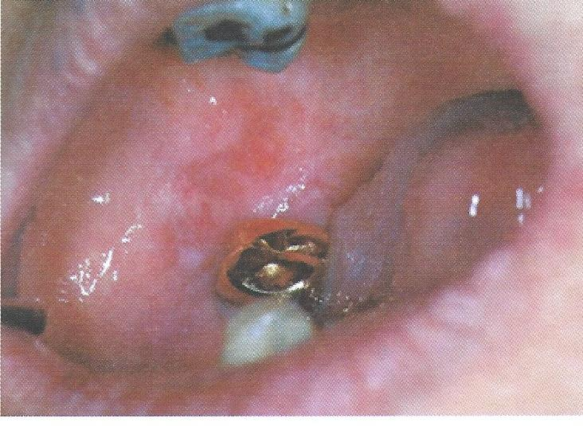

รอยโรคไลเคนอยด์ จากการสัมผัสครอบโลหะ
พบได้ในช่องปาก มีลักษณะทางคลินิกคล้ายรอยโรคไลเคนพลานัส แบ่งเป็น
Lichenoid contact lesions พบในบริเวณที่สัมผัสกับวัสดุที่เป็นสาเหตุ เช่น amalgam ครอบฟันโลหะ ฟันเทียมถอดได้
Lichenoid drug reactions จากยารักษาโรคทางระบบ เช่น NSAIDS, anxiolytic drug, antihypertensive drug
การวินิจฉัย ร่วมกับการซักประวัติการใช้ยา การตรวจในช่องปาก
การรักษา หากกำจัดสาเหตุ รอยโรคจะหายไปหรือดีขึ้น
ส่งต่อทันตแพทย์